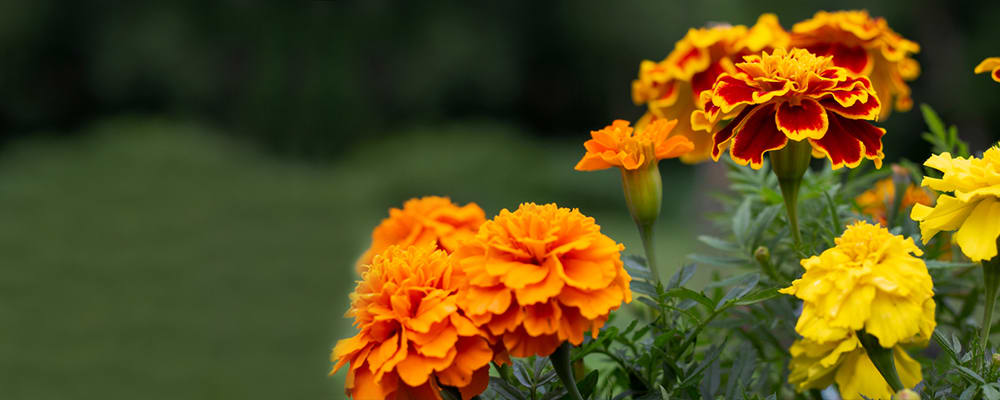
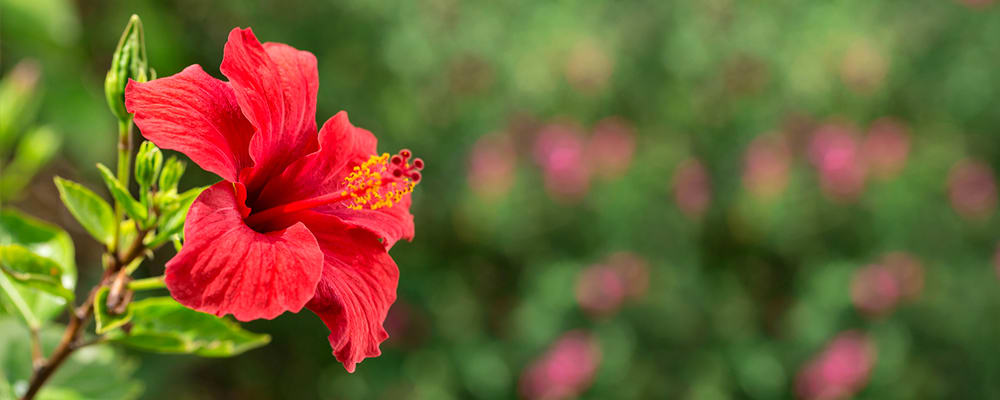
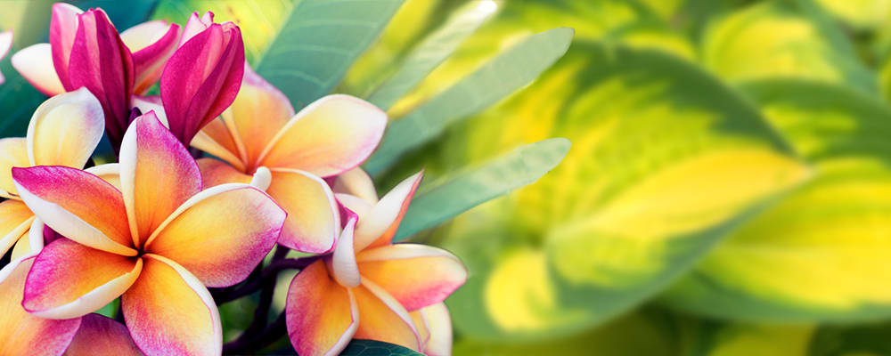
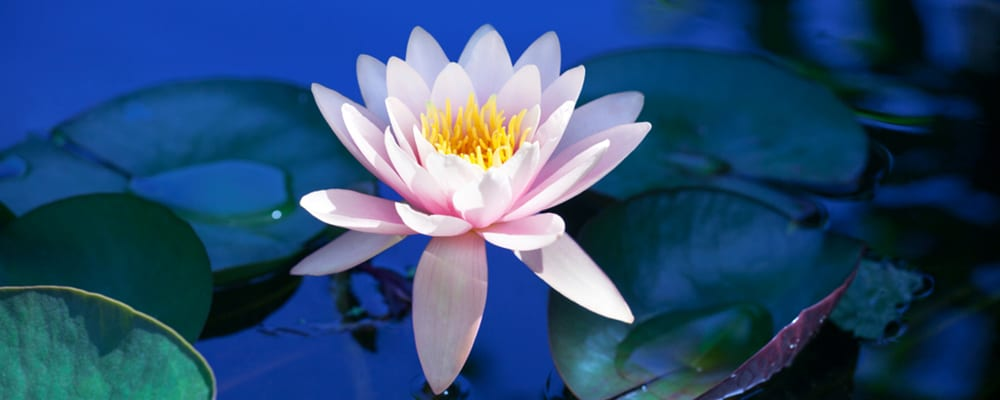

Jasmine
This flower is known for its unique sweet smell. Widely used in cosmetic products and even in Ayurveda, the smell of jasmine is calming and soothing. They are also widely used in weddings and social events. They bloom from spring to fall with a resting period in October.'

Marigold
Widely used for worshipping purpose, Marigold is ancient in Indian history, it’s also used in Hindu weddings. Their bright yellow color has a very cheerful vibe to them. These flowers can withstand the Indian heat; perfect for summer & autumn gardening.
Hibiscus
Another flower that is widely used for worshipping is Hibiscus. It is known to be the flower of Goddess Kali and is an essential item to be used to adorn her idol. Their bright red color is empowering on the goddess. This flower is commonly found in various regions within India and they grow all the year around.
Frangipani
These flowers easily available in India represent intense love and bond between two people. Exotic and sweet smelling they’re known for their pure white color. Although, they look delicate but they’re quite tough in nature; they can withstand the heat and even drought.
Lotus
A common water plant known as Lotus or Water-lily. This flower is also associated with the Indian God Brahma who is often seen placed on this flower. They begin to grow in early April. During mid and late May, the leaves start growing above the water; in early and mid-June, blooming starts. In late June and mid-August, they reach full bloom.
